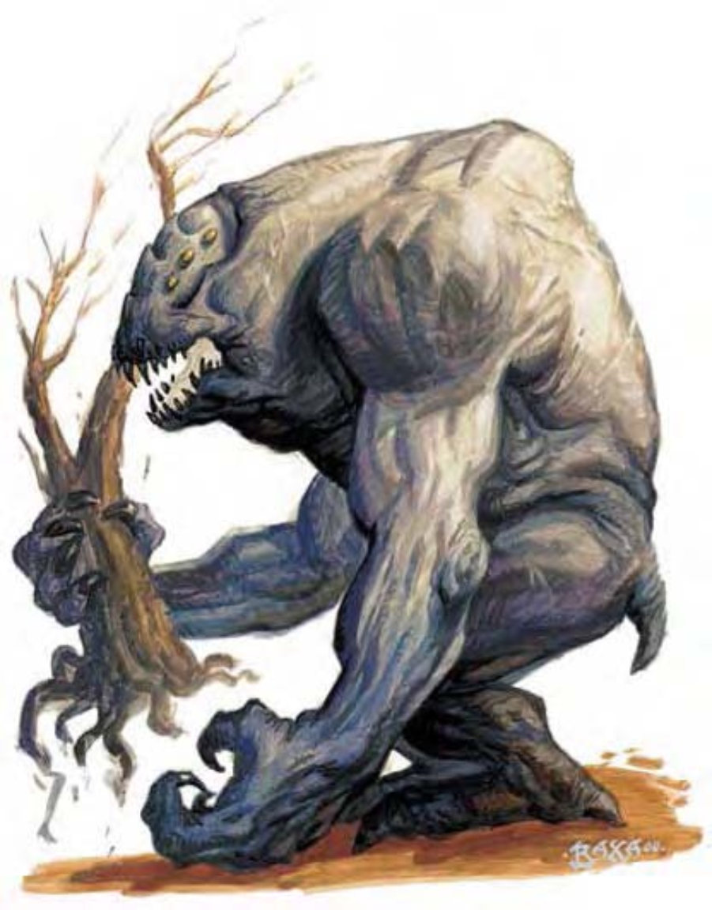

| 资料栏位 | 灰袋兽 (Gray Render) 大型魔法兽 |
| 生命骰 | 10d10+70 (125HP) |
| 先攻 | +0 |
| 速度 | 30英尺 (6格) |
| 防御等级 | 19 (-1体型、+10天生)、接触9、措手不及19 |
| 基本攻击/擒抱 | +10 / +20 |
| 攻击 | 啮咬+15近战 (2d6+6) |
| 全力攻击 | 啮咬+15近战 (2d6+6)、2爪抓+10近战 (1d6+3) |
| 占据/触及 | 10英尺 / 10英尺 |
| 特殊攻击 | 精通擒抱、撕扯2d6+9 |
| 特殊能力 | 黑暗视觉60英尺、昏暗视觉、灵敏嗅觉 |
| 豁免 | 强韧+14、反射+7、意志+4 |
| 属性 | 力量23、敏捷10、体质24、智力3、感知12、魅力8 |
| 技能 | 躲藏+2、侦察+10、生存+3 |
| 专长 | 顺势斩、猛力攻击、精通冲撞、追踪 |
| 环境 | 温带沼泽 |
| 组织 | 单独 |
| 挑战级数 | 8 |
| 宝藏 | 无 |
| 阵营 | 通常绝对中立 |
| 进化 | 11-15HD (大型)；16-30HD (超大型) |
| 等级修正值 | +5 (部属) |
这种笨重的双足生物体型与巨人相近。灰袋兽有着驼背、灰色的无毛身体与宽阔的肩膀；手臂长而结实，长有长爪的手在行走时会拖过地面。下斜的头部长着六只小而黄的眼睛，嘴大而有力，其中长满黑色的牙齿。
野蛮残暴的灰袋兽是栖息于偏远地区的致命掠食者。这种猛兽拥有结实的肌肉与骨骼，赋予他们巨人般的力量与耐力。灰袋兽即使驼背身高也有9英尺，宽4英尺，体重约4000磅。
曾有巡林客见过灰袋兽用嘴将直径3英尺的大树连根拔起，并在片刻间将之扯成碎片。
灰袋兽从不成群结队。这种无性别的生物每个个体可以生产一只后代，装载于袋中养育一段时间，在那之后幼兽就得独自生活。
灰袋兽有种特性，倾向于信赖、保护并供养一个（或一群）栖息之地的原生生物。这种奇怪的行为似乎与其野蛮的一面相反，但灰袋兽曾被发现与狼、狮子、马、移位兽、枭头熊、独角兽、鹫马甚至人形生物在一起。不论是否被接纳，灰袋兽总是会试图靠近，近到能够看护该生物（群），每天还会带肉类给他们。灰袋兽不愿意伤害受他保护的生物，若该生物攻击他会退开。大部分的生物没多久便会感激这位强大的盟友，接纳甚至依赖灰袋兽。
战斗不论是为了打倒猎物、保护自己或其守护的生物，灰袋兽的攻击招招致命。打猎时，灰袋兽偶尔会躲起来等待猎物自己靠近。
精通擒抱 (特异)：当灰袋兽啮咬到对手时，即可利用即时动作进行啮咬攻击（视为擒抱），且不会引发对方借机攻击。
撕扯 (特异)：如果灰袋兽在啮咬并啮咬成功后，就可抓住并撕裂对方身体，自动额外造成2d6+9点伤害。
技能：由于那六只锐利的眼睛，灰袋兽在进行“侦察”检定时具有+4种族加值。